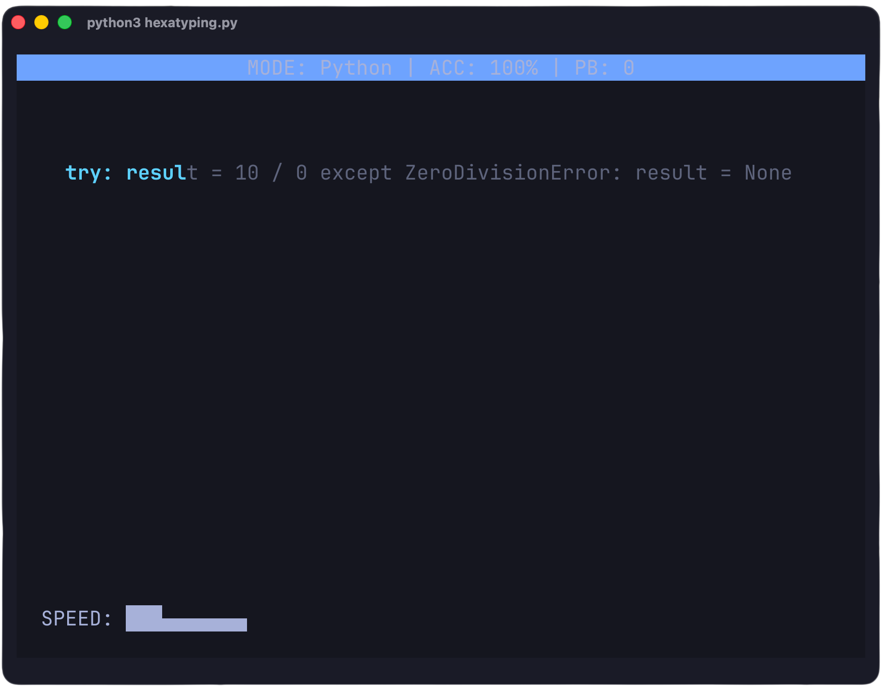
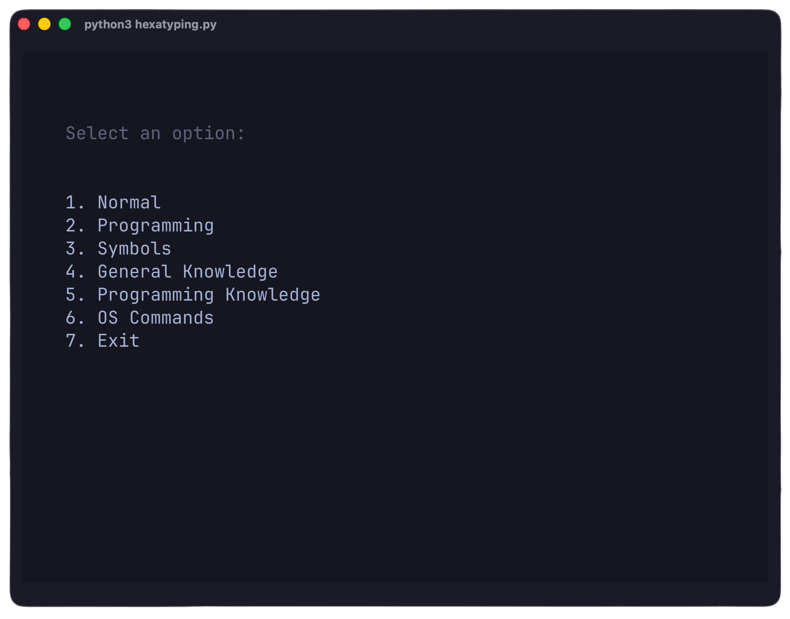

Multiple typing modes
Switch between distinct modes designed to improve both typing speed and technical knowledge simultaneously.
An open-source, terminal-based typing tester built for Linux power users. It seamlessly combines typing practice with programming syntax, essential Linux commands, computer science concepts, and general knowledge.


Switch between distinct modes designed to improve both typing speed and technical knowledge simultaneously.
Monitor your typing speed dynamically with a live Words Per Minute graph integrated into the terminal.
Measure your precision meticulously, with final WPM scores intelligently adjusted based on keystroke inaccuracies.
Practice with actual programming syntax and core computer science definitions to build muscle memory.
Master essential Bash and Linux system commands directly within your typing sessions.
A completely distraction-free Text User Interface designed specifically for productivity and speed.
Standard English sentences designed for conventional, uninterrupted typing practice.
Actual programming syntax such as Python and C++ to help practice specific coding keystrokes.
Helps typers practice typing symbols.
Curated science and history facts designed to combine knowledge-building with typing.
Computer science concepts and definitions to reinforce CS learning while increasing speed.
Essential Linux and Bash commands to build reflexive terminal navigation skills.
Hexatyping operates entirely within the terminal. As the user types, the application captures keystrokes via the TUI, measuring accuracy against the selected mode's text bank. The real-time WPM is calculated dynamically and adjusted for errors upon completion.
To ensure persistent tracking across sessions, personal best scores and historical data are serialized and saved automatically to the user's home directory:
~/.hexatype_scoresThis guarantees a lightweight, private, and localized tracking system without requiring any external databases.
git clone https://github.com/Hexa-Programmer/hexatyping.git
cd hexatyping
python hexatyping.pyHexatyping was developed entirely by Hexa-Programmer. The diverse content banks for the typing modes were curated and generated with AI assistance. AI was also utilized to help debug and refine the complex terminal rendering and TUI logic. This is a personal learning project and will continue to evolve over time.